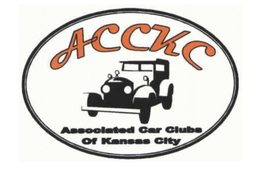
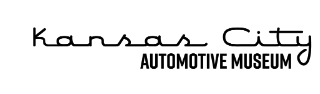
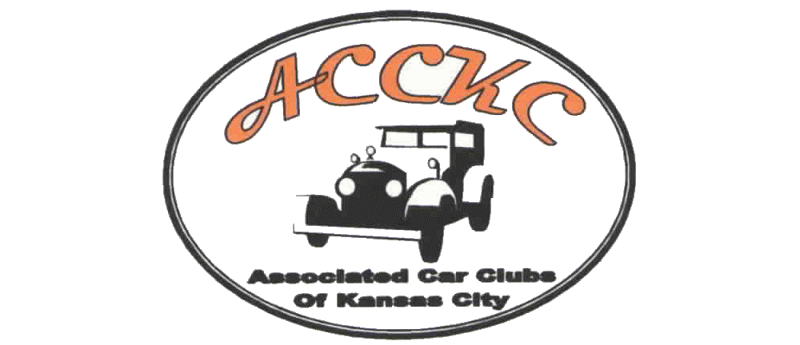
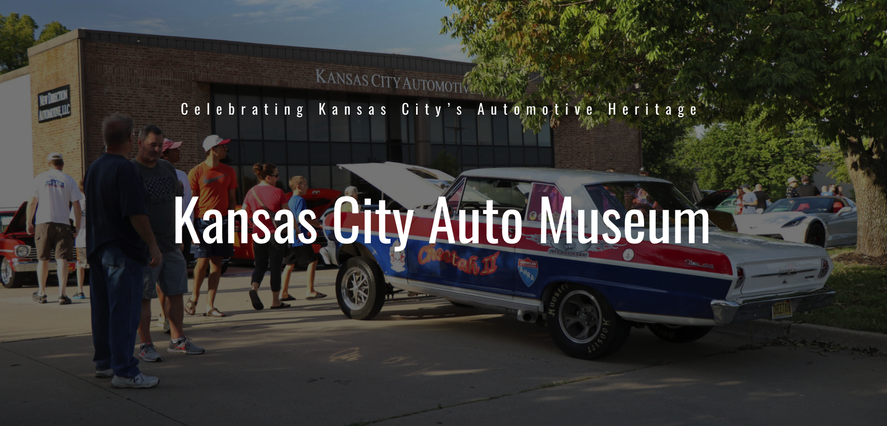
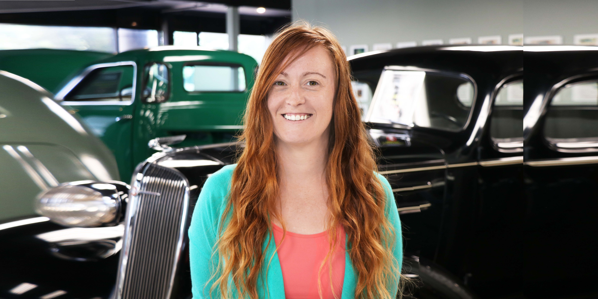

About & Contact

Tab 3

ACCKC
To add or modify an event email acckcevents@gmail.com
Welcome to the official Midwest Event Finder of the ACCKC, your go-to resource for local car show information. For decades, we've been dedicated to gathering and sharing details about the most exciting automotive events in the area. Our journey began with flyers, but as technology advanced, so did we. We moved on to Hemmings event finder and then created a sub-site on the Kansas City Automotive Museum website. Today, we are proud to offer our app, available on both Apple and Android devices. With ACCKC, you'll never miss a car show again!

Kansas City Automotive Museum
Kansas City Automotive Museum is proud to web host the Event Finder.
The Kansas City area is home to major automotive and motorcycle manufacturing, racing, and a vibrant collector community. We have a long, storied, and proud automotive heritage that needs to be preserved and celebrated.

Cassondra Reed Hammond, PMP®
Project Manger & Developer
Introducing an app that I created! With my experience as the Operations and Events Manager for the Kansas City Automotive Museum for over 7 years, I was able to partner with KCAM and the ACCKC to create this Midwest Event Finder app. I possess technical expertise in HTML, CSS, JavaScript, and Angular. If you're in need of an app developer or project manager, don't hesitate to reach out to me. I would be delighted to connect with you on LinkedIn and learn more about what you do!